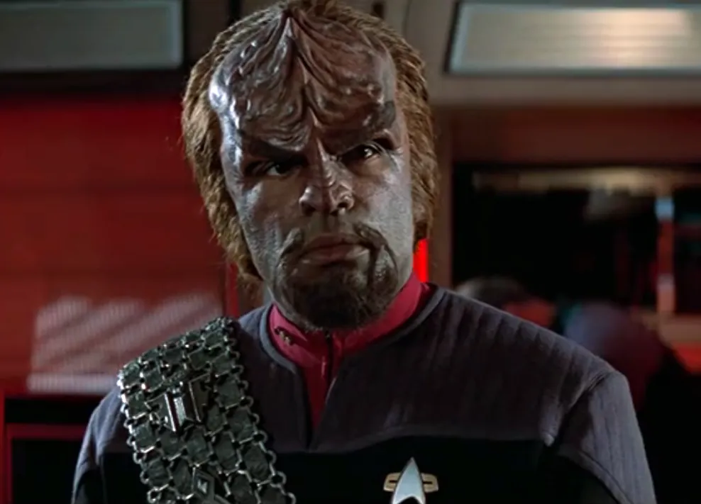
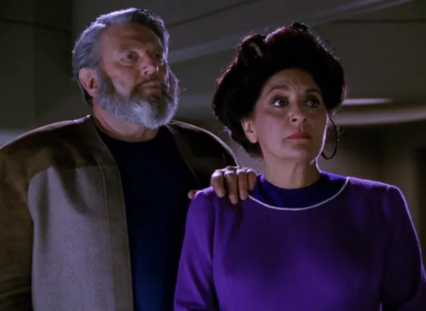
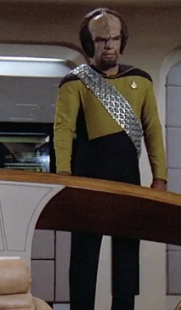
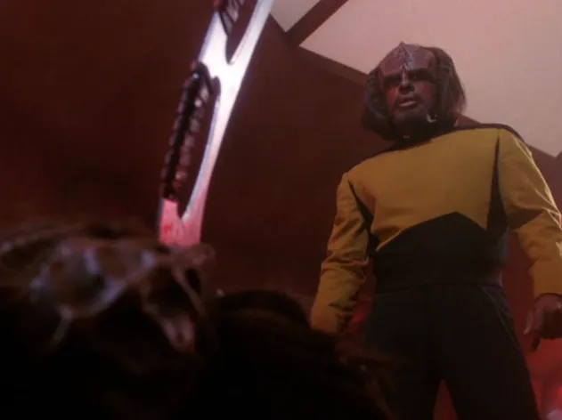
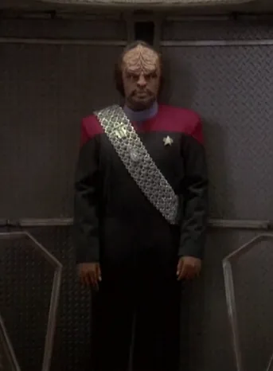
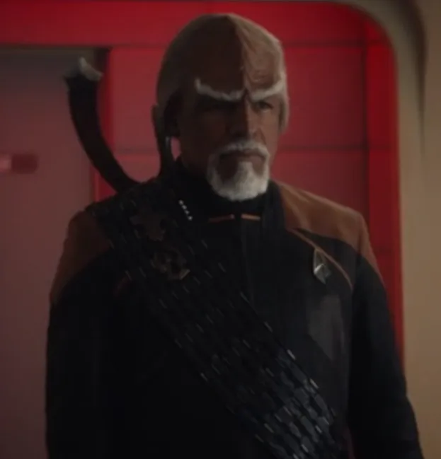

@c6reviews.
@c6reviews.| Worf, son of Mogh | |
|---|---|
 |
|
| Played by: | Michael Dorn |
| Primary Series: |  Seasons 1-7  Seasons 4-7  Season 3 |
| Primary Films: |
Star Trek Generations Star Trek: First Contact Star Trek: Insurrection Star Trek Nemesis |
Early Life
Worf born
Worf, son of Mogh, is born on the Klingon homeworld of Qo'noS
Khitomer Massacre & The Rozhenkos
At the age of 5, Worf and his family moved to the Khitomer colony. In 2346, Romulans attacked the colony and killed thousands of Klingons, including Worf's parents. A human couple, Sergey and Helena Rozhenko, took Worf in to their home and raised him alongside their own son, Nikolai, on the farming colony of Gault.

Worf age 10
Worf accidentally breaks a human boy's neck, leading to his death
During a soccer game, Worf collided with another player when they both went to head the ball. After the accident, Worf learned how fragile humans were, and was forced to learn to restrain himself around them.
Worf travels back to Qo'noS
At the age of fifteen, Worf traveled to the Klingon homeworld to declare his intent to become a warrior. After six days of meditation, the legendary Klingon warrior Kahless appeared to him in a vision, and he told Worf that he would do something no other Klingon had done before.

Worf joins Starfleet Academy
In 2357*, Worf joined Starfleet Academy, becoming the first Klingon to become a Starfleet cadet. His foster brother, Nikolai, also joined the academy, but dropped out after one year.*The event is canonical, but the precise year is apocryphal.
Worf age 20
Service on the USS Enterprise‑D
Worf begins his tour on the USS Enterprise NCC‑1701‑D
At the rank of Lieutenant junior grade, Worf served as a bridge relief officer for several stations, including the conn.
Worf becomes Tactical Officer and Chief of Security
Following the death of Security Chief Tasha Yar in 2364, Worf became the acting security chief for the Enterprise, and was given the official position the next year.

Worf promoted to Lieutenant, loses his family's honor
Worf's father was accused of betraying the Empire at Khitomer. Worf fought the allegations fiercely, but ultimately accepted discommendation for the good of the Empire after he learned that the story was actually a coverup for Duras's crimes, and that the Empire might fall into civil war if the truth came out.TNG 3x17 & 3x17: Sins of the Father
Worf kills Duras
After he learned that Duras was responsible for the death of his mate K'Ehleyr, Worf fought and defeated Duras in the Right of Vengeance.TNG 4x07: Reunion

Worf's honor is restored
After returning to the Empire when civil war finally did break out among his people, Worf's invaluable assistance to the Gowron family led to the restoration of his family's honor.TNG 4x26 & 5x01: Redemption
Worf rescues his foster brother from a doomed planet
Worf reunites with his foster brother, Nikolai Rozhenko, and finds that he's been up to his usual disobedient hijinks – this time violating the Prime Directive and putting himself and a group of colonists at grave risk.TNG 7x13: Homeward
Destruction of the Enterprise
After his promotion to Lieutenant Commander, Worf and the Enterprise embark on a mission to stop Tolian Soran from destroying a star. A conflict with the Duras sisters during those events would lead to the destruction of the Enterprise‑D.Star Trek Generations

Service on Deep Space Nine
Worf joins the crew of Deep Space Nine
After an extended leave of absence from Starfleet following the destruction of the Enterprise, Worf was given a special assignment on Deep Space Nine to assist Ben Sisko in averting a war with the Klingons. After some soul-searching, Worf joined the crew on a permanent basis.DS9 4x01/02: The Way of the Warrior

First Contact
Worf takes the Defiant into battle against a Borg cube near Earth, and ends up joining the crew of the Enterprise‑E on an adventure back in time to Earth's first contact.Star Trek: First Contact
Worf marries Jadzia Dax
DS9 6x07: You Are Cordially Invited
Worf joins the Enterprise-E for an adventure in the Briar Patch
For reasons that are not known, Worf briefly left DS9 to join the Enterprise crew on their mission to investigate what was happening among the Son'a and Ba'ku in the region of space known as the Briar Patch. In fact, Worf's explanation for his presence in the film is purposely drowned out by other dialogue. Ha!Star Trek: Insurrection
Worf becomes Federation Ambassador to Qo'noS
After the conclusion of the Dominion War, Worf is appointed as the Federation Ambassador to the Klingon Empire. Worf leaves his post at DS9 to return home to Qo'noS.DS9 7x25/26: What You Leave Behind
Worf joins the Enterprise-E in their fight against Shinzon
Shortly after attending Will Riker and Deanna Troi's wedding, Worf tagged along with the Enterprise crew on their mission to Romulus.Star Trek Nemesis
Worf age 40
2381–2400
(20 years)
(20 years)
Worf reunites with his original crew
After some time, Worf presumably left his position as Ambassador to the Klingon Empire and returned to Starfleet. He was promoted to captain, and in this year he was working with Starfleet Intelligence to investigate the theft of a dangerous device from the Daystrom Institute. His investigation eventually led him to join up with his original Enterprise-D crew as they cooperatively worked to uncover the details of the conspiracy.Star Trek: Picard Season 3
